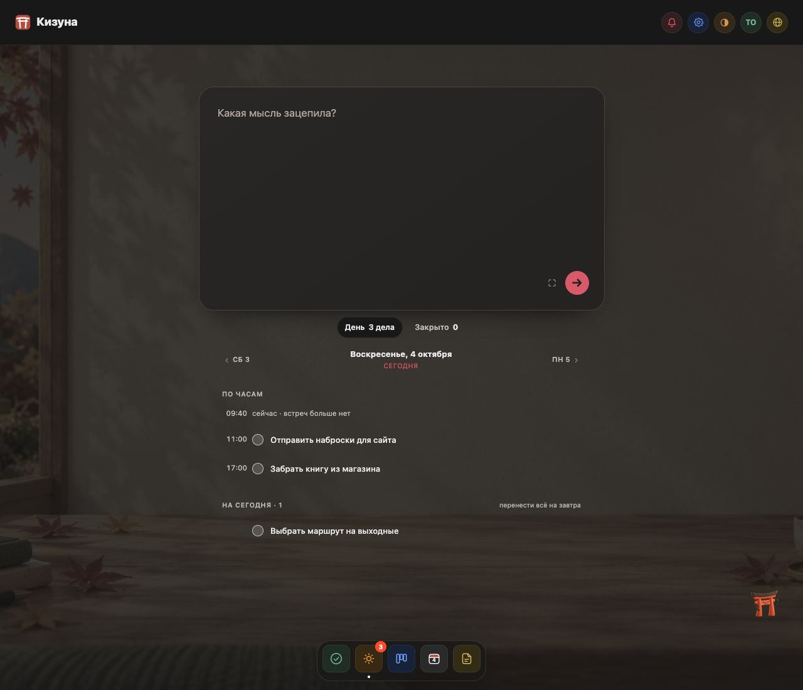
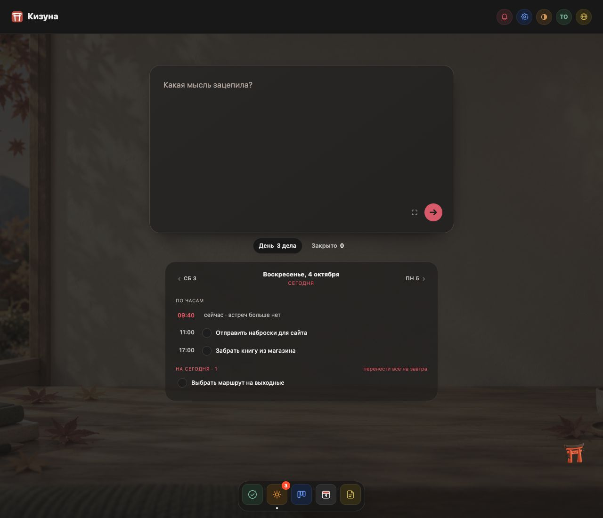
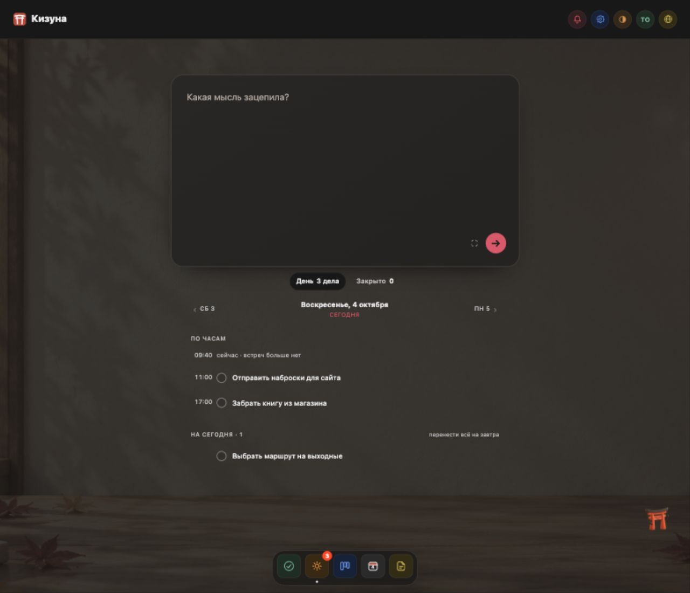
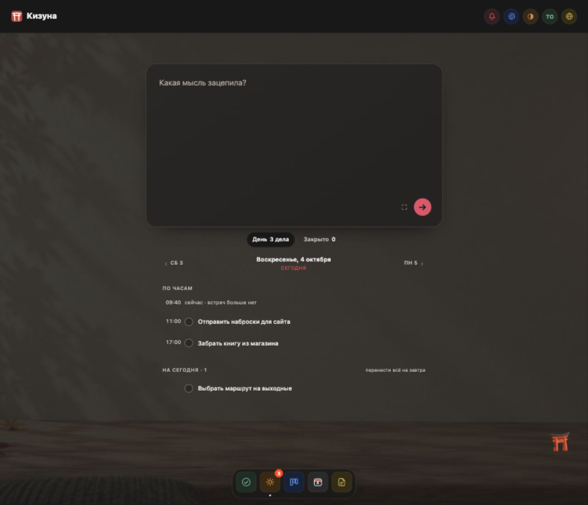
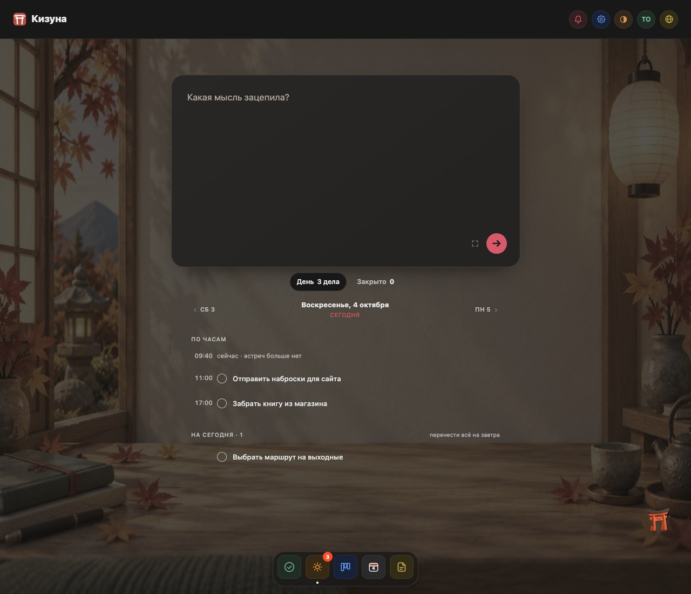
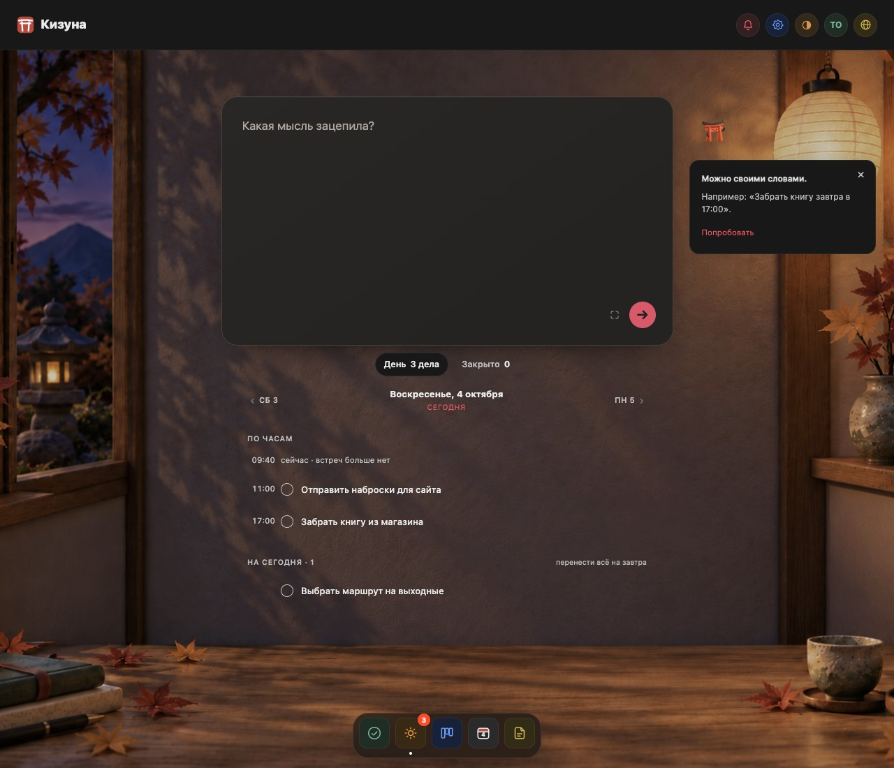
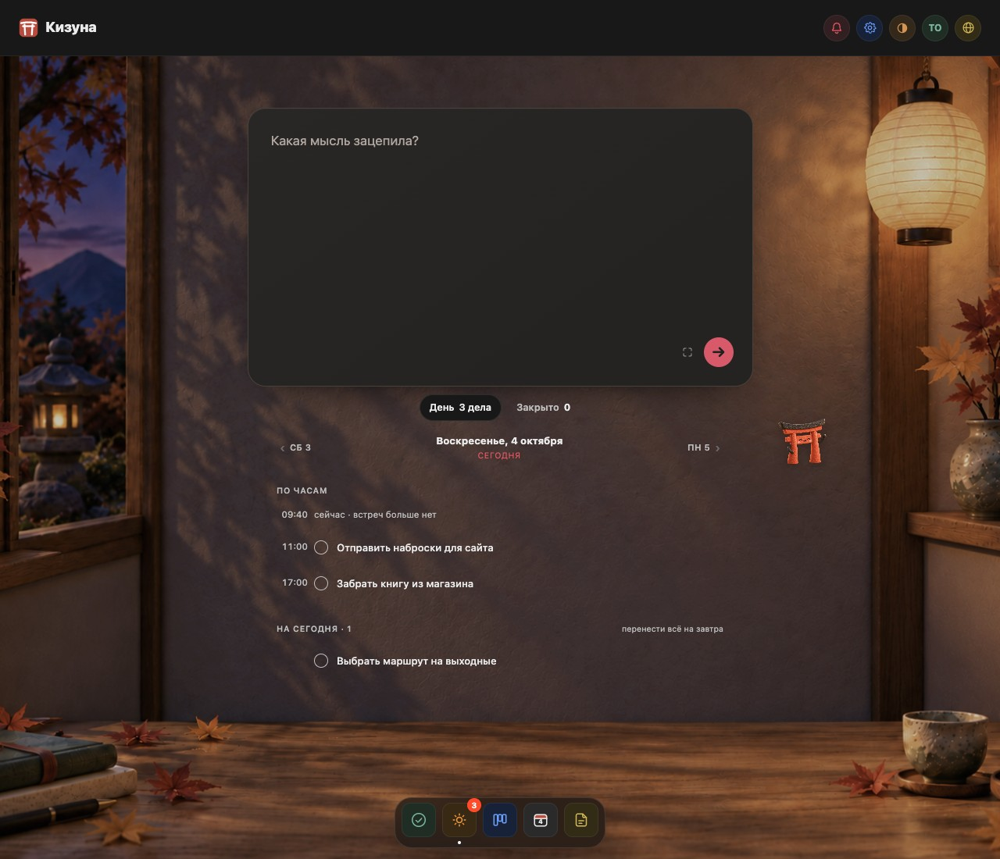
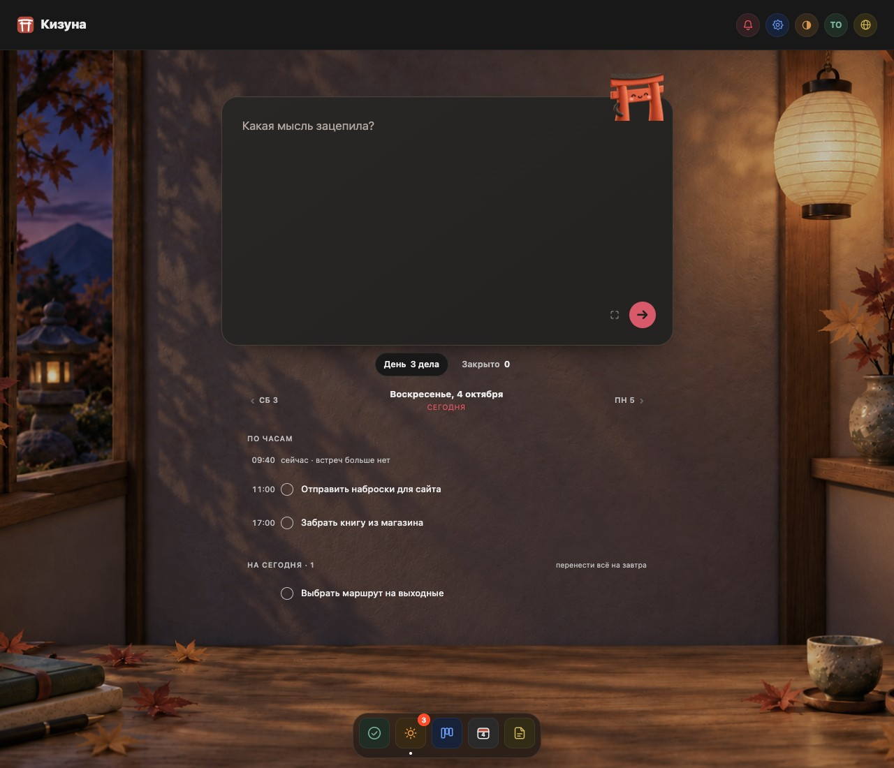

Цикл 1 · C1-AОтобран на этапе
Тихий ритм

Наиболее спокойное улучшение списка: пустой статус перестал конкурировать с делами, контроли стали легче, дополнительной панели нет.
Цикл 1 · C1-BОтвергнут
Собранный день
Линейки делают группы понятными, но усиливают табличность и добавляют ещё две жёсткие горизонтали поверх рисунка. Выигрыш перед A недостаточен.
Цикл 1 · C1-CОтвергнут
Единая плоскость

Второй крупный тёмный прямоугольник закрывает комнату и создаёт тяжёлую маску. Читаемость улучшена ценой связи со сценой, при этом розовые акценты и тёмные контроли сохранены.
Цикл 2 · C2-AОтвергнут
Больше стены

Предметные линии выведены из списка, но комната почти полностью исчезла: на телефоне остались глухая стена и узкая полоса стола; на desktop окно видно только обрезком у края.
Цикл 2 · C2-BОтвергнут
Комната вокруг дела

Перекомпоновка не дала видимого преимущества перед A: на обоих размерах кадр выглядит как пустая тёмная плоскость с полосой стола. Окно, фонарь и уютные предметы отсутствуют в рабочем кадре.
Цикл 3 · C3-AОтвергнут
Целая комната

Комната снова видна, но полное растяжение исходного кадра сильно сжимает предметы на телефоне, а линия стола вновь пересекает рабочий список на широком экране и при длинных списках. B сохраняет атмосферу убедительнее.
Цикл 3 · C3-BОтобран на этапе
Вечер в комнате
Вечерняя сцена лучше объединяет привычный графитовый ввод и комнату: сохраняются свет, материалы и узнаваемые предметы, короткий список находится на спокойной стене. Отдельный мобильный кадр выглядит естественнее.
Цикл 4 · C4-AОтвергнут
Первый шаг

Автоматическая подсказка создаёт второй центр внимания, а на телефоне теряет объяснение и выглядит как уже существующая задача или ещё одно поле. Первое действие становится менее очевидным.
Цикл 4 · C4-BОтвергнут
Тори по запросу

Помощь по запросу и явное «Подставить» лучше A, но визуальное решение пока не принято: крупный Тори плавает у даты на desktop, его назначение неочевидно; на телефоне при длинном списке персонаж остаётся у заголовка после ухода ввода.
Цикл 5 · C5-AОтобран на этапе
Спокойное чтение
Принят как промежуточное улучшение списка: длинные названия доступны полностью, мягкая подсветка больше не становится тяжёлой чёрной полосой. Светлая сцена остаётся слабым местом.
Цикл 5 · C5-BОтобран на этапе
Дневной свет

Принят как промежуточное направление дневной сцены: светлая и тёмная комнаты теперь образуют один узнаваемый мир, мобильный кадр сохраняет спокойную стену за задачами. Список нужно взять из A.
Цикл 6 · C6-AОтобран на этапе
Рядом с мыслью

Принят вторым финалистом для более заметного присутствия персонажа. Тори теперь привязан к вводу, помощь открывается по запросу, список и сцены собраны цельно. B спокойнее и предпочтительнее для ежедневной работы.
Цикл 6 · C6-BОтобран на этапе
Тихая мастерская
Главный финалист: сцена создаёт атмосферу, заполненный день остаётся спокойным; Тори появляется с понятной пользой в пустом состоянии. Сайт ясно показывает продукт через комнату внутри демонстрации, сохраняя чистую область для смысла и CTA.